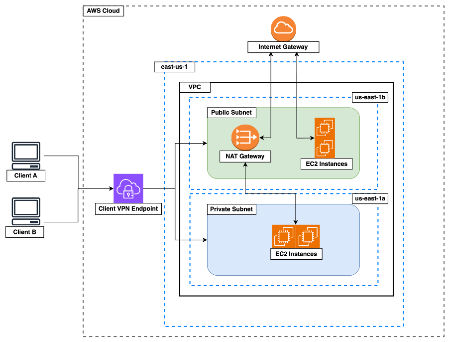

This document contains the instructions for provisioning and configuring a simple architecture on AWS. Terraform is used to write the infrastructure as code whilst Ansible is used to configure the infrastructure that has been provisioned using Terraform.

IaC Features
CaC Features
The terraform folder contains the terraform source code to provision the infrastructure required for a web app.
It provisions a simple architecture to satisfy a POC but could easily be extended.
It comprises of the following main components:
us-east-1 regionus-east-1a and us-east-1b availability zones respectivelyThe terraform folder structure is as follows:
terraform project root
certs & keys folder, *.key ignored in .gitignore
cert authority for signing certsserver certificateserver private key, ignored by gitclient certificateclient private key, ignored by gitopenvpn client config file, ignored by gitsample openvpn client config fileec2 instancesvpc, subnets, routetables and routesproviders configuration i.e. awssecurity groups, ingress, egressmain terraform config, provider versionsall variables, workspace specific variablesec2 vpn client endpoint config, cert upload to Amazon cert manager (ACM)VPN Client endpoint The Client VPN endpoint uses cert based authentication. You will need to generate TLS certs and will also require a vpn client to connect. The OpenVPN client is available for all major operating systems and is easy to use. The OpenVPN project also provide an easy-rsa utility for creating a certificate authority with signed certs. Below are the steps to get set up quickly and easily. This project is also referenced on the AWS docs for creating a client VPN endpoint
git@github.com:OpenVPN/easy-rsa.git# Initialise new pki environment
./easyrsa init-pki
# Build a new ca authority
./easyrsa build-ca # follow prompts
# Generate server cert and key
./easyrsa build-server-full server nopass
# Generate client cert and key
./easyrsa build-client-full client1.domain.tld nopass
pki/ca.crt
pki/issued/server.crt
pki/private/server.key
pki/issued/client1.domain.tld.crt
pki/private/client1.domain.tld.key
Terraform Terraform will need to be installed on the machine where you will run the below steps. Most popular package managers are also supported. For more information follow steps here: https://developer.hashicorp.com/terraform/tutorials/aws-get-started/install-cli
Navigate to terraform directory
cd terraform
Initialise current directory for terraform use
terraform init
Create the workspaces for the 3 environments
terraform workspace new dev
terraform workspace new staging
terraform workspace new production
terraform workspace select dev
terraform plan
terraform apply -auto-approve
terraform destroy
Ansible is a configuration as code (CaC) tool. Most CaC tools will now also provide ability to manage infrastructure as code (IaC) and vice versa. The ansible folder includes two playbooks, one for configuring a webserver and one for configuring a builder. A common role is shared by both playbooks, tasks specific for the relevant play are stored in the playbooks.
The ansible folder structure is as follows:
ansible project root
folder for storing role configurations
a common role for basic package installation and updates
folder to store task files for common role
tasks to install common os packagesfolder for storing docker role
folder for storing variables
file for storing docker role variablesfolder to store task files for docker role
tasks to install and configure dockerfolder for storing website role to deploy and configure NGINX
folder for storing files to copy to hosts
html file to serve using NGINX webserverfolder to store task files for website role
tasks to set up nginx container and copy website dataplaybook for builder servers in private subnetplaybook for webservers in public subnetfile to store ip addresses and profiles of ec2 instances (builders and webservers)You will need to have python3 installed on the controller from where you will run your scripts. Most popular package managers can install python3 but it can also be downloaded directly here: https://www.python.org/downloads/
Environment Prep
To keep your base python3 installation clean it is a good idea to set up a virtual environment prior to installing the required
python modules. If solely working with linux vm's the pywinrm package is not required
python3 -m venv ~/virtual_environments/ansible. ~/virtual_environments/ansible/bin/activatepip install -U pip
pip install ansible
pip install pywinrm
Prepare the hosts file The playbook references a hosts profile. Hosts can be separated into profiles in the hosts file. In the provided hosts file there are two profiles one for each playbook. The hosts file needs to be updated to incllude the ip addresses of the ec2 instances you plan to configure e.g.
[webservers]
# webserver1
10.0.0.20
[builders]
# builder1
10.0.0.152
The playbooks can be ran using the below commands, since the standard id_rsa key is not being used for ssh, the private key for connecting to the ec2 instances can be passed in using --private-key. Inventory or hosts file can be passed in using -i flag, in this case the default name hosts is used and could be omitted.
# webserver
ansible-playbook -i hosts --private-key=~/.ssh/labsuser.pem ./webserver-play.yml
# builder
ansible-playbook -i hosts --private-key=~/.ssh/labsuser.pem ./builder-play.yml
ssh -i ~/.ssh/labsuser.pem ec2-user@10.0.1.56curl -X POST http://localhost:5001/anonymize -H "Content-type: application/json" --data "{\"text\": \"hello world, my name is Jane Doe. My number is: 034453334\", \"analyzer_results\": [{\"start\": 24, \"end\": 32, \"score\": 0.8, \"entity_type\": \"NAME\"}, { \"start\": 48, \"end\": 57, \"score\": 0.95,\"entity_type\": \"PHONE_NUMBER\" }], \"anonymizers\": {\"DEFAULT\": { \"type\": \"replace\", \"new_value\": \"ANONYMIZED\" },\"PHONE_NUMBER\": { \"type\": \"mask\", \"masking_char\": \"*\", \"chars_to_mask\": 4, \"from_end\": true }}}"